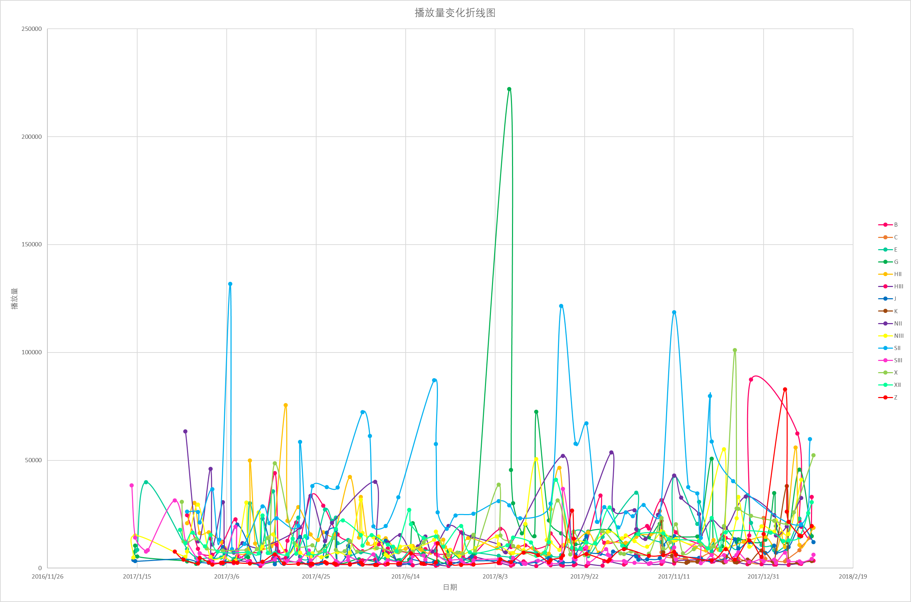

时段2：20170112-20180203

也许是S喵在寒影这也过于努力，也许是盛世崩塌前的元恩已经开始摇摇欲坠，总而言之，48区和美丽48区时期的S队成了寒影处当之无愧的塞纳河流量第一队。
在梦旗和命X两套X鳗最爱公演加持下，全SNHG最日系元气的X girls迎来了糊X直至现在唯一的盛世时期。
换了美丽世界的H，第1人称的小盛世恩穗，双面偶像的G（此处插一句，G队，怎么又是你，偷塔了单场播放量第一），奇幻加冕礼的宇宙E相继走向了起飞，恩穗更是成了分团第一队伍，内乱的XII和退团潮的B却陷入了低潮。
后发劣势的J和Z，与沈阳和重庆一道糊作一团，大哥笑不了二哥。
对i公演来说，这一年可谓是天堂，出的原创公演几乎个个神公演（包括18年1月出的BAF和三角函数）（为什么某三套公演一直不出音源！），也是少有的让人真切感受到一套好公演带给一支队伍的助力的时刻。
这一年也是河粉构成从以刻板印象中的宅男为主到直男与ntxl平分秋色的关键一年，更是整条河在101系选秀改变整个国内女团市场之前的最后的辉煌，不论从何种意义上来说都可谓是影响深远。